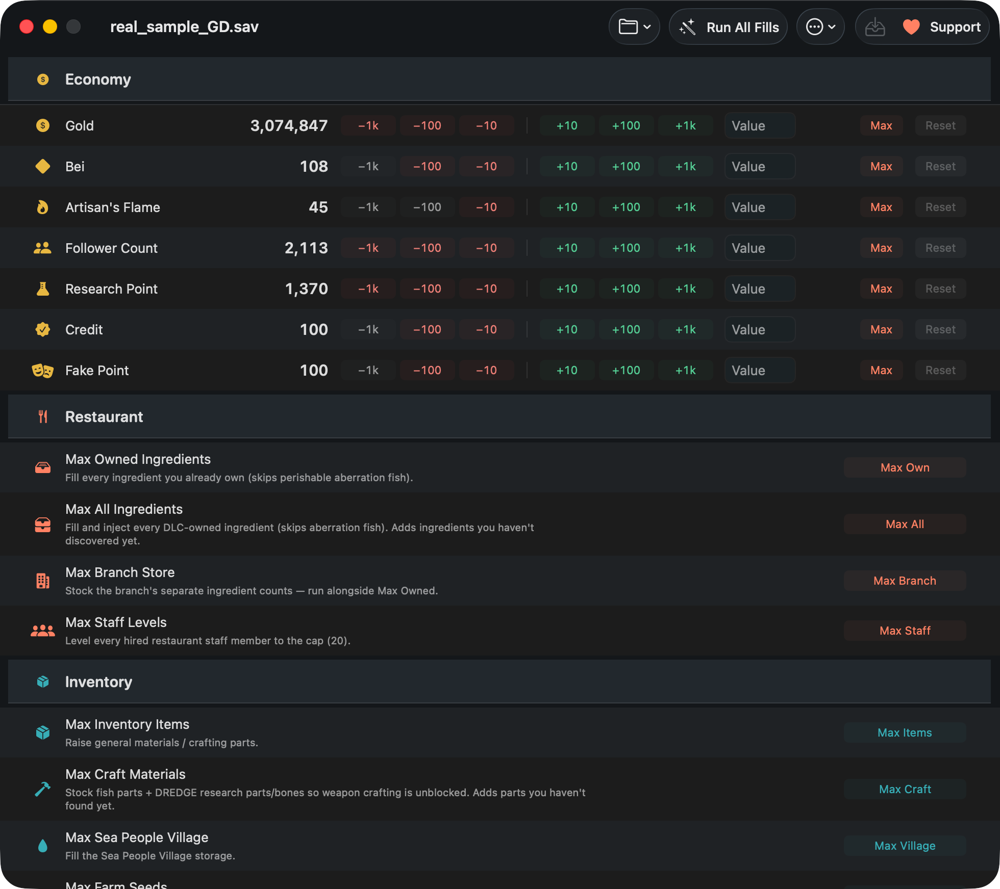

How to max Gold, Bei, and Artisan's Flame in Dave the Diver
On macOS, with a free save editor, offline, in about two minutes — and with a way back if you overshoot. This is the practical walkthrough: what each currency actually does, how to set it, and what to avoid.
The short version
- Quit Dave the Diver completely and turn Steam Cloud off for it.
- Open DiveSaveEd — it finds your save automatically.
- In Currencies, use Max, type an exact number, or nudge with ±10 / ±100 / ±1000.
- Review the change preview, then save. A timestamped backup is written first.
- Launch the game. Wrong number? Undo, Reset, or restore a backup.
What each currency is for
| Currency | What it buys | Why people top it up |
|---|---|---|
| Gold | The main currency — weapon and gear upgrades, restaurant furniture and equipment, supplies from the shops. | Upgrades outpace income in the mid-game; a lot of runs turn into a grind for the next tier. |
| Bei | The Sea People village currency, for their trades, buildings and village-side purchases. | It's earned from a narrow set of activities, so it bottlenecks village progress specifically. |
| Artisan's Flame | The crafting/upgrade material used for the higher-tier weapon and equipment work. | Drops are slow and unpredictable, which makes late-game upgrading feel gated by luck. |
| Research Point | Research and unlock progression. | Same story — a slow trickle relative to what the tree costs. |
| Cooksta Follower Count | Restaurant rank progression. | Useful for pushing rank without replaying service nights. |
| Credit / Fake points | Sea People Village trust — the game labels it “Credit” — plus a related save field. | Included for completeness — most people leave these alone. |
All of these live in the same Currencies section of the editor and share the same controls, so anything below applies to any of them.
Before you edit anything
-
Get past the opening tutorial first. A few values are hard-scripted during the tutorial and the game overwrites them regardless of what's in the save. Edits stick reliably once you're past that point.
-
Quit the game completely. Not just the window — quit the app. The editor refuses to write while Dave the Diver is running, because writing to a file the game has open is how saves get corrupted.
-
Turn off Steam Cloud for this game. Steam Library → right-click Dave the Diver → Properties → General → uncheck Keep game saves in the Steam Cloud. Skip this and Steam will quietly restore the old cloud save over your edit at launch — details here.
-
Optional but free: keep your own copy. The editor backs up every write automatically, but a manual duplicate of the
.savcosts ten seconds — how to do that.
The walkthrough
-
Install and open the editor. Download the
.dmgfrom Releases and drag the app to Applications. It's signed and notarized by Apple, so it opens normally — macOS shows the usual "downloaded from the Internet" confirmation the first time. -
Let it find your save. Both known macOS save locations are checked automatically, and every save slot the game has is listed. If you have more than one run, pick the slot you want — the editor shows them so you don't overwrite the wrong one.
-
Go to Currencies and find Gold, Bei or Artisan's Flame. Each has its own row with the current value from your save.
-
Set the value using whichever control suits you — they're described below. Max is one click; typing an exact number is usually the better idea.
-
Check the change preview. Before anything is written you get a summary of exactly what will change. Read it. This is the cheapest moment to catch a typo.
-
Save. A timestamped backup of the original is written first, automatically, then your edit goes to disk.
-
Launch the game and check the numbers. With Steam Cloud off, what you wrote is what loads.


The controls: ±10 / 100 / 1000, exact value, Max, Reset
| Control | What it does | Use it when |
|---|---|---|
| ±10 / ±100 / ±1000 | Nudges the current value up or down by that amount, repeatedly. | You want "a bit more", or you're dialling a number in without doing arithmetic. Also the easy way to walk a value back down. |
| Exact value | Type the number you want. It replaces the value outright. | Almost always the best option — you know precisely what you're getting. |
| Max | Sets the field to its maximum in one click. | You genuinely want the ceiling and don't care about the number. |
| Reset | Restores the value the save had when you opened it. | You've been fiddling and want this one field back to where it started — no backup restore needed. |
Reset is per-field and works right up until you write, which makes experimenting cheap: change Gold, change your mind, reset Gold, and Bei is untouched.
How much should you actually set?
An honest note: Max is rarely the fun answer. Setting every currency to its ceiling removes the pacing the game is built around, and there's no way to un-know a number. Some more useful shapes:
- Un-grind, don't skip. Top up to roughly what the next two or three upgrades cost. You keep the loop, you lose the repetition.
- Repair, don't inflate. Lost progress to a crash or a bad night? Set the value back to what you had, not higher.
- Unblock one bottleneck. If Artisan's Flame is the only thing gating you, raise just that. Gold and Bei can stay earned.
- If you do want everything: Max, then Max Everything for the bulk fills too — it's your save, and every step of it is undoable.
Undo, Reset and backups — three ways back
Nothing here is one-way:
- Reset — per field, restores the value the save had when you opened it. Before you write.
- Undo last edit — reverses a bulk action in-app, before you ever write.
- Restore from Backup — every write makes a timestamped backup first, and there's a window listing all of them. Pick one, roll back.

To restore: quit the game, open Restore from Backup, choose the timestamp from
before the edit, restore, then launch. If you'd rather do it by hand, copy your own
.sav copy back over the original —
same folder, same file name.
Beyond currencies: ingredients and inventory
Money is often not the real bottleneck. If the grind you're trying to escape is ingredient hunting or crafting materials, the bulk fills cover it in one click each:
| Restaurant | owned ingredients · all ingredients (DLC-aware) · branch stock · staff levels |
|---|---|
| Inventory | general items · craft materials (fish parts + DREDGE research parts/bones) · Sea People village · farm seeds · caught-fish grade |
Or Max Everything for all of them at once. You can also browse and edit any single item by name — the app ships an item database, so you search for what you actually want instead of hunting for numeric IDs.
If the numbers didn't change in-game
- Steam Cloud. Nine times out of ten. It restored the old cloud save over your edit at launch. Turn it off, then redo or restore — full steps.
- You're still in the tutorial. A few values are hard-scripted there and get overwritten. Play past it and try again.
- Wrong save slot. If you have multiple runs, confirm the slot you edited is the one you're loading.
- The game was running. The editor refuses to write in that case — quit it fully and redo the edit.
Download DiveSaveEd — free Read the FAQ
macOS 14+, Apple Silicon and Intel. Steam version on macOS. Signed and notarized by Apple.
Related
-
Where is the save file on macOS?
Both paths, the hidden
~/Libraryfolder, backups and Steam Cloud. -
Cheat Engine alternative for Mac
Why there's no Cheat Engine on macOS, and what a save editor does instead.
-
FAQ
Bans, disappearing edits, Intel Macs, non-English saves, DLC and undo.